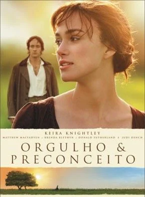
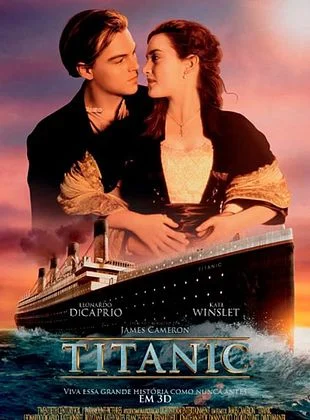

Filmes de romance
Orgulho e Preconceito

Genero: Romance / Drama
Lançamento: 2005
Assistir trailer
Nota: ⭐⭐⭐⭐⭐⭐⭐⭐⭐☆ (9/10)
Inglaterra, 1797. As cinco irmãs Bennet - Elizabeth (Keira Knightley), Jane (Rosamund Pike), Lydia (Jena Malone), Mary (Talulah Riley) e Kitty (Carey Mulligan) - foram criadas por uma mãe (Brenda Blethyn) que tinha fixação em lhes encontrar maridos que garantissem seu futuro. Porém Elizabeth deseja ter uma vida mais ampla do que apenas se dedicar ao marido, sendo apoiada pelo pai (Donald Sutherland). Quando o sr. Bingley (Simon Woods), um solteiro rico, passa a morar em uma mansão vizinha, as irmãs logo ficam agitadas. Jane logo parece que conquistará o coração do novo vizinho, enquanto que Elizabeth conhece o bonito e esnobe sr. Darcy (Matthew Macfadyen). Os encontros entre Elizabeth e Darcy passam a ser cada vez mais constantes, apesar deles sempre discutirem.
Titanic

Genero: Romance / Drama Épico
Lançamento: 1997
Assistir trailer
Nota: ⭐⭐⭐⭐⭐⭐⭐⭐⭐☆ (9/10)
Jack Dawson (Leonardo DiCaprio) é um jovem aventureiro que, na mesa de jogo, ganha uma passagem para a primeira viagem do transatlântico Titanic. Trata-se de um luxuoso e imponente navio, anunciado na época como inafundável, que parte para os Estados Unidos. Nele está também Rose DeWitt Bukater (Kate Winslet), a jovem noiva de Caledon Hockley (Billy Zane). Rose está descontente com sua vida, já que sente-se sufocada pelos costumes da elite e não ama Caledon. Entretanto, ela precisa se casar com ele para manter o bom nome da família, que está falida. Um dia, desesperada, Rose ameaça se atirar do Titanic, mas Jack consegue demovê-la da ideia. Pelo ato ele é convidado a jantar na primeira classe, onde começa a se tornar mais próximo de Rose. Logo eles se apaixonam, despertando a fúria de Caledon. A situação fica ainda mais complicada quando o Titanic se choca com um iceberg, provocando algo que ninguém imaginava ser possível: o naufrágio do navio.
Como eu era antes de você

Genero: Romance / Drama
Lançamento: 2016
Assistir trailer
Nota: ⭐⭐⭐⭐⭐⭐⭐⭐☆☆ (8/10)
Em Como Eu Era Antes de Você, o rico e bem sucedido Will (Sam Claflin) leva uma vida repleta de conquistas, viagens e esportes radicais até ser atingido por uma moto. O acidente o torna tetraplégico, obrigando-o a permanecer em uma cadeira de rodas. A situação o torna depressivo e extremamente cínico, para a preocupação de seus pais (Janet McTeer e Charles Dance). É neste contexto que Louisa Clark (Emilia Clarke) é contratada para cuidar de Will. De origem modesta, com dificuldades financeiras e sem grandes aspirações na vida, ela faz o possível para melhorar o estado de espírito de Will e, aos poucos, acaba se envolvendo com ele.
A culpa é das estrelas

Genero: Romance / Drama
Lançamento: 2014
Assistir trailer
Nota: ⭐⭐⭐⭐⭐⭐⭐⭐☆☆ (8/10)
Diagnosticada com câncer, a adolescente Hazel Grace Lancaster (Shailene Woodley) se mantém viva graças a uma droga experimental. Após passar anos lutando com a doença, ela é forçada pelos pais a participar de um grupo de apoio cristão. Lá, conhece Augustus Waters (Ansel Elgort), um rapaz que também sofre com câncer. Os dois possuem visões muito diferentes de suas doenças: Hazel preocupa-se apenas com a dor que poderá causar aos outros, já Augustus sonha em deixar a sua própria marca no mundo. Apesar das diferenças, eles se apaixonam. Juntos, atravessam os principais conflitos da adolescência e do primeiro amor, enquanto lutam para se manter otimistas e fortes um para o outro.
A Cinco passo de você

Genero: Romance / Drama
Lançamento: 2019
Assistir trailer
Nota: ⭐⭐⭐⭐⭐⭐⭐⭐☆☆ (8/10)
Dois jovens se apaixonam inesperadamente enquanto realizam tratamentos para suas doenças graves. Com pouco tempo de vida sobrando, o casal vive cada momento do relacionamento como se fosse o último, transformando situações banais em algo especial e único
Questão de tempo
Genero: Romance / fantasia
Lançamento: 2013
Assistir trailer
Nota: ⭐⭐⭐⭐⭐⭐⭐⭐⭐☆ (9/10)
Dois jovens se apaixonam inesperadamente enquanto realizam tratamentos para suas doenças graves. Com pouco tempo de vida sobrando, o casal vive cada momento do relacionamento como se fosse o último, transformando situações banais em algo especial e único